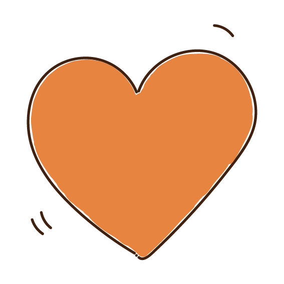
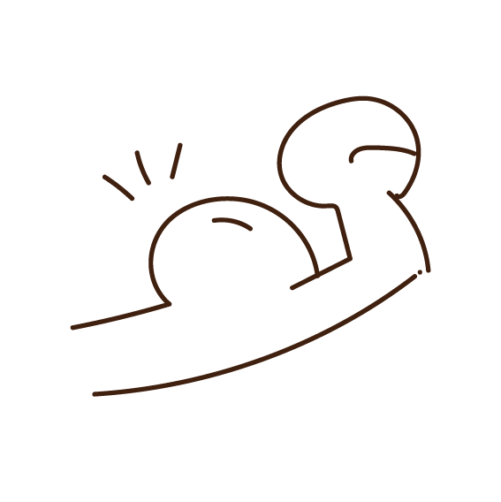

pmsってなーに？？
生理でドタキャンって嘘っぽい！ ¥ 生理中の彼女面倒臭いなあ。¥ なんでこんなにイライラしてるんだろ…¥ と思っているあなた、¥ それはPMSのしわざかも…¥ PMSをよく知ったら¥ 相手のことをもっと理解できるかも…？
Premenstrual Syndromeの略称で、月経前症候群と呼ばれるものです。
月経(生理)の3~10日位前から症状が起こると言われています。 PMSの症状やその強さは人によって異なります。
よく起こる症状として知られているのは 以下のような症状です。
気分が落ち込んだり、不安や苛立ちに襲われたり、涙もろくなったりなどと、感情をコント ロールしにくくなります。また不眠や集中力・判断力低下などにもつながることがあります。
肌荒れや体重増加、乳房の張り・痛み、下腹部のはりなどの見た目上の変化もあれば、頭痛や 腹痛、筋肉痛、関節痛などと身体に痛みを伴うものもあります。痛みの程度も人によってそれぞれ で動けなくなるくらい痛くなってしまう人もいます。
さて次はPMSのどんなところが辛いのかを知りたいですよね。
女性の生の声を覗いてみてみましょう。
普段PMSでどんなことで苦労してどんな悩みを持っているのでしょうか。
次に、普段女性がPMSになった時にどんな対処をしているのか、 どんなことをして欲しいと思っているのかを紹介します
01 ピルを飲む!
02 健康的な食事や運動を心がける
03 理解して受け止める
ピルとは経口避妊薬と呼ばれ、ピルの服用によって主体的に妊娠を避けることができます。ただこの役割だけでなく、月経周期が不順なのを改善したり、PMSの軽減にも効果があります。PMSには低容量ピルが使用されることが多いそうです。ピルは医療用医薬品である為、購入には医者の診療が必須になります。
ホルモンバランスを整える栄養素を取ったりむくみや頭痛を和らげるために塩分やアルコールを控えたりすると良いそうです。ゆっくりと血糖値を上げてゆっくりと消化をすることで食欲増進やイラつきを抑えることができるそうです。
PMSで辛い時に多くの人が求めていることの一つとして、身体や心の変化のことについて理解をしてくれて、それを受け止めてもらえることです。今回の記事のヒアリングでもこの声がよく聞こえました。症状を把握し本人のことを理解しようとする姿勢が大切です。
みなさん、PMSについて少しは知ってもらえましたでしょうか？
PMSのことを知ることで、相手のことを受け止めようとする
きもちが生まれるのではないかと思います。
この記事で、
誰かと誰かの間に少しでも新たな思いやりが生まれますように。
※この記事は専門家の知識に基づくものではありません。